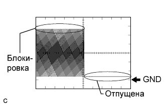
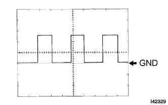
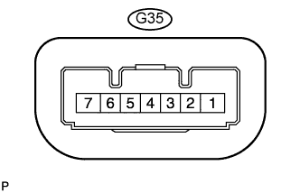

СИСТЕМА ПОСАДКИ И ЗАПУСКА (для функции запуска) > КОНТАКТЫ ЭБУ |
| ПРОВЕРЬТЕ ЭБУ РАСПРЕДЕЛЕНИЯ ПИТАНИЯ |
Отсоедините разъем G51 ЭБУ распределения питания.
Измерьте напряжение и сопротивление в соответствии со значениями, приведенными в таблице.
| Номера контактов (обозначения) | Цвет проводки | Описание контактов | Условие | Заданные условия |
| G51-1 (AM22) - масса | B - масса | +B источника питания | Всегда | 9,5-14 В |
| G51-2 (AM21) - масса | B - масса | +B источника питания | Всегда | 9,5-14 В |
| G51-5 (GND2) - масса | W-B - масса | Масса | Всегда | Менее 1 Ом |
| G51-6 (GND) - масса | W-B - масса | Масса | Всегда | Менее 1 Ом |
| G51-17 (SSW2) - масса | R - масса | Сигнал выключателя зажигания | Выключатель зажигания нажат | Менее 1 Ом |
| G51-17 (SSW2) - масса | R - масса | Сигнал выключателя зажигания | Выключатель зажигания не нажат | 10 кОм или более |
| G51-18 (SSW1) - масса | LG - масса | Сигнал выключателя зажигания | Выключатель зажигания нажат | Менее 1 Ом |
| G51-18 (SSW1) - масса | LG - масса | Сигнал выключателя зажигания | Выключатель зажигания не нажат | 10 кОм или более |
| G51-24 (LIN2) - масса | G - масса | Линия LIN | Всегда | 10 кОм или более |
Подсоедините разъем G51 ЭБУ распределения питания.
Измерьте напряжение в соответствии со значениями, приведенными в таблице.
| Номера контактов (обозначения) | Цвет проводки | Описание контактов | Условие | Заданные условия |
| G51-3 (SLP) - G51-6 (GND) | SB - W-B | Сигнал положения привода блокировки рулевого управления | Блокировка рулевого управления снята | Импульсы формируются (см. осциллограмму 1) |
| G51-3 (SLP) - G51-6 (GND) | SB - W-B | Сигнал положения привода блокировки рулевого управления | Блокировка рулевого управления включена | Импульсы формируются (см. осциллограмму 1) |
| G51-8 (SLR+) - G51-6 (GND) | W - W-B | Сигнал электродвигателя блокировки рулевого управления | Электродвигатель блокировки рулевого управления работает | Менее 1 В |
| G51-8 (SLR+) - G51-6 (GND) | W - W-B | Сигнал электродвигателя блокировки рулевого управления | Электродвигатель блокировки рулевого управления не работает | 11-14 В |
| G51-10 (INDW) - G51-6 (GND) | L - W-B | Сигнал предупреждения | Для моделей с механической трансмиссией:
Для моделей с автоматической трансмиссией:
| 8-14 В |
| G51-16 (P) - G51-6 (GND) | V - W-B | Сигнал блокировки селектора | Рычаг переключения передач в положении P*1 | 8-14 В |
| G51-16 (P) - G51-6 (GND) | V - W-B | Сигнал блокировки селектора | Рычаг переключения передач не в положении Р*1 | Менее 1 В |
| G51-19 (ACCD) - G51-6 (GND) | R - W-B | Сигнал ACC | Выключатель зажигания в положении ACC | 8-14 В |
| G51-19 (ACCD) - G51-6 (GND) | R - W-B | Сигнал ACC | Зажигание выключено | Менее 1 В |
| G51-20 (IG1D) - G51-6 (GND) | V - W-B | Сигнал IG1 | Зажигание включено (IG) | 8-14 В |
| G51-20 (IG1D) - G51-6 (GND) | V - W-B | Сигнал IG1 | Выключатель зажигания в положении ACC | Менее 1 В |
| G51-22 (INDS) - G51-6 (GND) | B - W-B | Сигнал состояния автомобиля | Для моделей с механической трансмиссией:
Для моделей с автоматической трансмиссией:
| 8-14 В |
| G51-23 (SPD) - G51-6 (GND) | R - W-B | Сигнал скорости автомобиля | Зажигание включено (IG), автомобиль движется со скоростью около 20 км/час (12 миль в час) | Формирование импульсов: (см. осциллограмму 2) |
| G50-2 (STA) - G51-6 (GND) | W - W-B | Сигнал датчика положения паркинга/нейтрали*1 или пускового переключателя муфты сцепления*2 | Для моделей с механической трансмиссией:
Для моделей с автоматической трансмиссией:
| Менее 1 В |
| G50-3 (STAR) - G51-6 (GND) | B - W-B | Сигнал стартера | Для моделей с механической трансмиссией:
Для моделей с автоматической трансмиссией:
| 8 - 14 В*3 |
| G50-8 (IG2D) - G51-6 (GND) | L - W-B | Сигнал IG2 | Зажигание включено (IG) | 8-14 В |
| G50-8 (IG2D) - G51-6 (GND) | L - W-B | Сигнал IG2 | Выключатель зажигания в положении ACC | Менее 1 В |
| G50-11 (STP1) - G51-6 (GND) | V - W-B | Стоп-сигнал | Педаль тормоза нажата*1 | 8-14 В |
| G50-11 (STP1) - G51-6 (GND) | V - W-B | Стоп-сигнал | Педаль тормоза отпущена*1 | Менее 1 В |
С помощью осциллографа проверьте форму сигнала ЭБУ.
|  |
Осциллограмма 1
| Номера контактов (обозначения) | G51-3 (SLP) - G51-6 (GND) |
| Настройки прибора | 2 В/дел., 100 мс/ дел. |
| Состояние автомобиля | Рулевое управление блокировано или разблокировано |
|  |
Осциллограмма 2
| Номера контактов (обозначения) | G51-23 (SPD) - G51-6 (GND) |
| Настройки прибора | 5 В/дел., 10 мс/ дел. |
| Состояние автомобиля | Зажигание включено (IG), автомобиль движется со скоростью около 5 км/час (3 мили в час) |
| ПРОВЕРЬТЕ ЭБУ СЕРТИФИКАЦИИ |
Отсоедините разъем G38 ЭБУ сертификации.
Измерьте напряжение и сопротивление в соответствии со значениями, приведенными в таблице.
| Номера контактов (обозначения) | Цвет проводки | Описание контактов | Условие | Заданные условия |
| G38-1 (+B) - масса | V - масса | +B источника питания | Всегда | 11 – 14 В |
| G38-15 (E) - масса | W-B - масса | Масса | Всегда | Менее 1 Ом |
| G38-29 (LIN) - масса | G - масса | Линия LIN | Всегда | 10 кОм или более |
| ПРОВЕРЬТЕ ЭБУ БЛОКИРОВКИ РУЛЕВОГО УПРАВЛЕНИЯ |
|  |
Отсоедините разъем G35 ЭБУ блокировки рулевого управления.
Измерьте напряжение и сопротивление в соответствии со значениями, приведенными в таблице.
| Номера контактов (обозначения) | Цвет проводки | Описание контактов | Условие | Заданные условия |
| G35-1 (GND) - масса | W-B - масса | Масса | Всегда | Менее 1 Ом |
| G35-6 (IG2) - масса | W - масса | Питание зажигания | Выключатель зажигания в состоянии ON (ВКЛ) (IG) | 11 - 14 В |
| G35-6 (IG2) - масса | W - масса | Питание зажигания | Зажигание выключено | Менее 1 В |
| G35-7 (B) - масса | G - масса | +B источника питания | Всегда | 11-14 В |
Подсоедините разъем G35 ЭБУ блокировки рулевого управления.
Измерьте напряжение в соответствии со значениями, приведенными в таблице.
| Номера контактов (обозначения) | Цвет проводки | Описание контактов | Условие | Заданные условия |
| G35-4 (SLP1) - G35-1 (GND) | SB - W-B | Сигнал положения привода блокировки рулевого управления | Блокировка рулевого управления включена | 11-14 В |
| G35-4 (SLP1) - G35-1 (GND) | SB - W-B | Сигнал положения привода блокировки рулевого управления | Блокировка рулевого управления снята | менее 1 В |